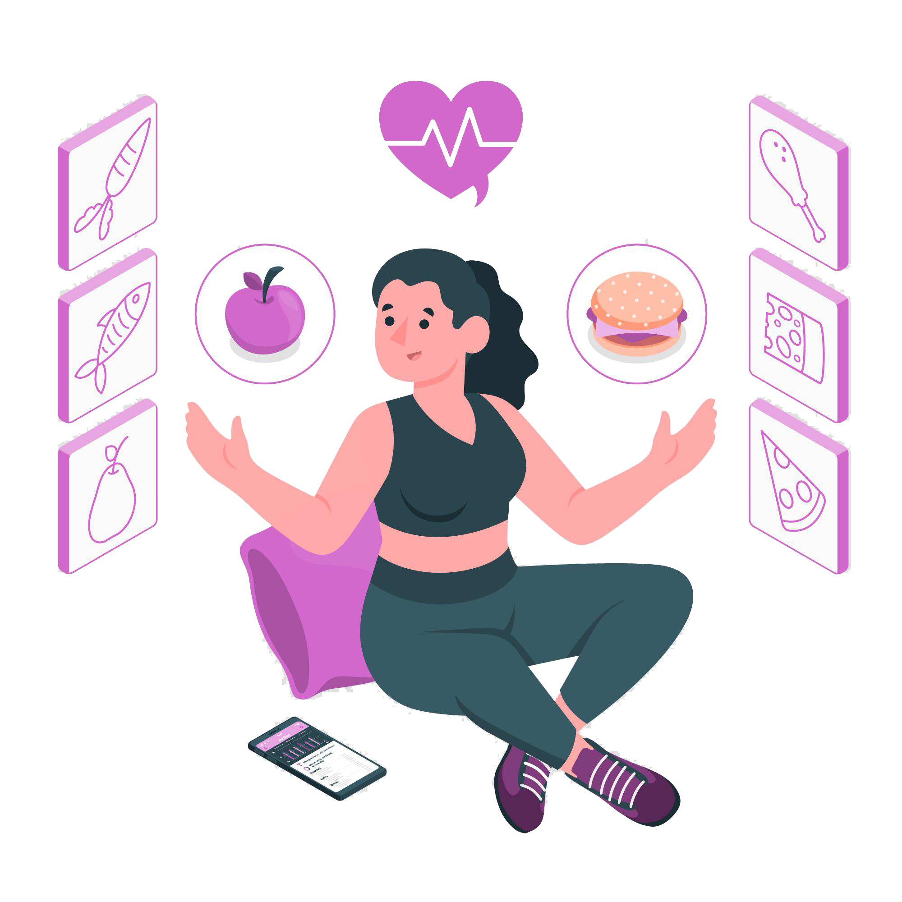
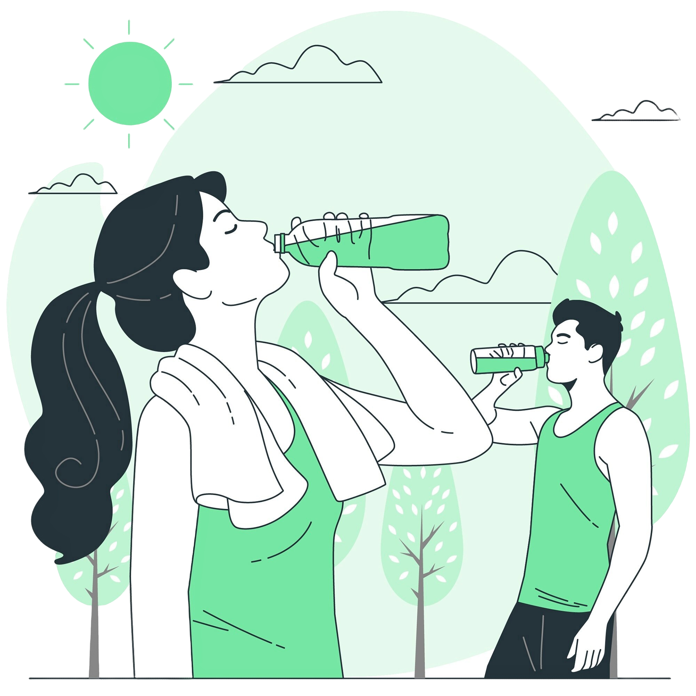
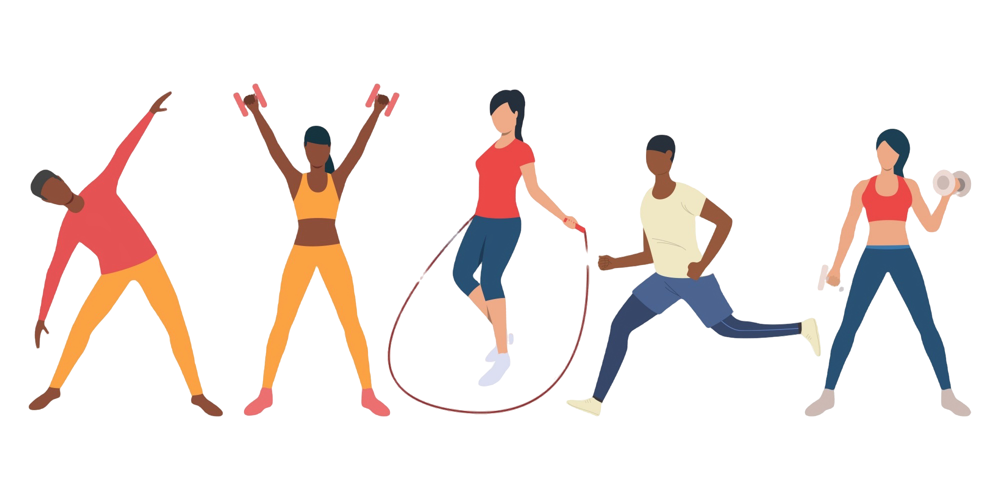
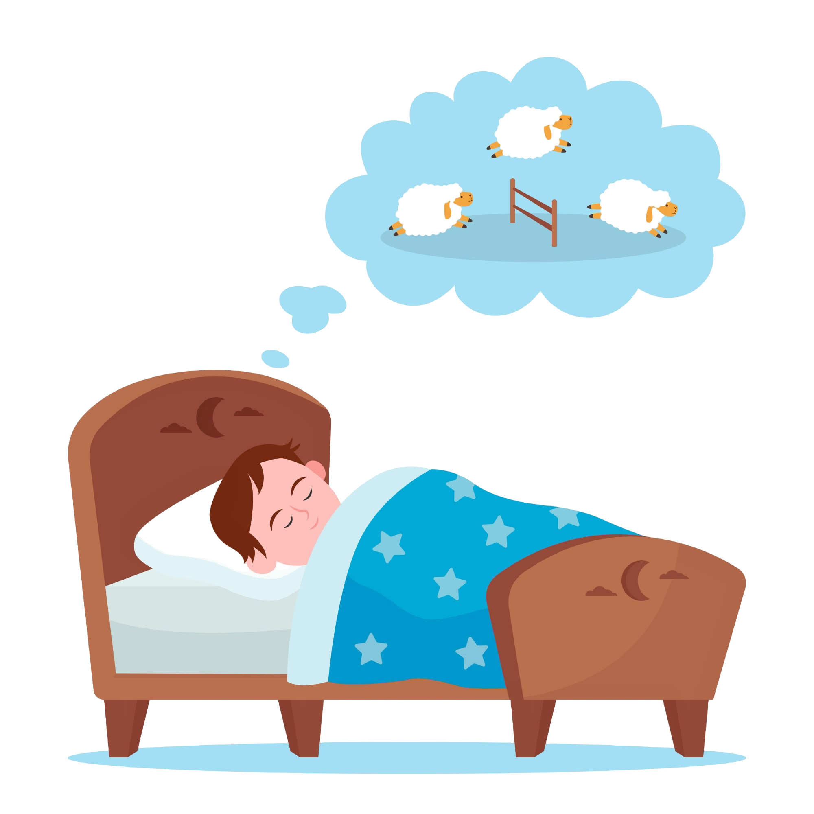
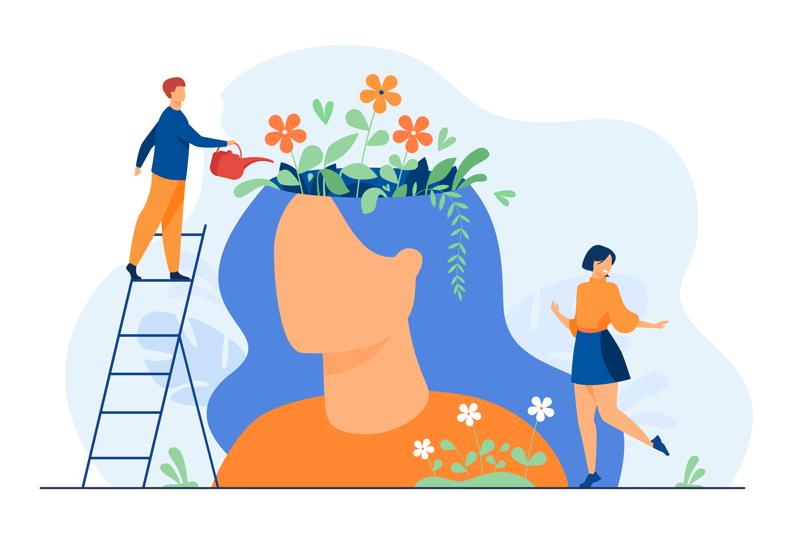

Dicas para uma vida saúdavel
1. Alimentação Balanceada:
Consuma uma variedade de alimentos ricos em nutrientes, como frutas, vegetais, grãos integrais, proteínas magras e gorduras saudáveis. Evite alimentos processados, ricos em açúcares e gorduras saturadas. Controle as porções para evitar o excesso calórico.
2. Hidratação:
Beba bastante água ao longo do dia para manter o corpo hidratado. Evite bebidas açucaradas e alcoólicas, que podem contribuir para o ganho de peso e problemas de saúde.
3. Atividade Física:
Pratique exercícios regularmente para fortalecer os músculos, melhorar a saúde cardiovascular e manter o peso sob controle. Escolha atividades que você goste e que se encaixem na sua rotina diária.
4. Sono Adequado:
Durma de 7 a 9 horas por noite para garantir o descanso adequado do corpo e da mente. Estabeleça uma rotina de sono regular e evite estimulantes, como cafeína e eletrônicos, antes de dormir.
5. Saúde Mental:
Cuide da sua saúde mental praticando atividades relaxantes, como meditação, ioga, leitura e hobbies. Mantenha contato com amigos e familiares, e busque ajuda profissional se necessário.
